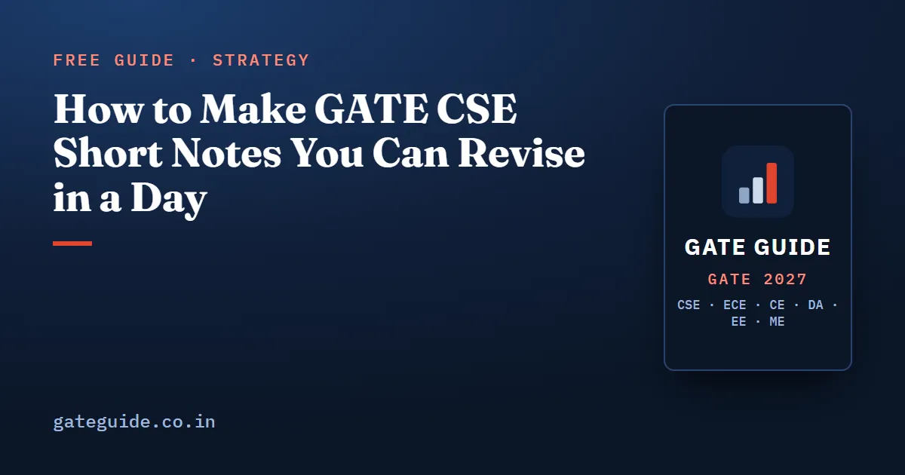

How to Make GATE CSE Short Notes You Can Revise in a Day

GATE CSE short notes are the pages you will actually read in the last fortnight, so they must hold only what wins marks: definitions you confuse, formulas with their conditions, traps, and one worked pattern per topic. Good notes for all eleven subjects can be revised in a single day. This guide teaches you what goes on a page, how many pages each subject deserves, and how to shrink the notes in stages before February 2027.
In this guide
Key takeaways
- Short notes are a record of what you get wrong, not a summary of the textbook.
- Every topic entry has four parts: definitions, formulas with their conditions, traps, and one worked pattern in your own numbers.
- Give each subject pages in proportion to the marks it carries, not the size of its textbook.
- Write a topic's note on the day you finish it, then correct it after solving previous-year questions on it.
- Shrink the notes twice: once when mocks begin, and again to a few pages plus a one-page error log in the final fortnight.
- A printed formula sheet checks your notes for gaps; it does not replace them.
What short notes are, and what they are not
A short note is a compressed page you write yourself for one topic, kept so you can recall the topic in a few minutes. It is not a chapter summary. A chapter summary tries to cover everything; a short note covers only what your memory drops under exam pressure.
The difference shows on the last day. A summary of eleven full textbooks is still too long to read in a day. A short note of your weak points across all subjects is not.
Your short notes also differ from a formula sheet. A formula sheet lists formulas anyone needs. Your notes add the conditions you forget, the conventions you misread, and the mistakes you have personally made. The live GATE CSE formula sheet is a good list to check your notes against.
The four parts of a topic entry
Each topic gets one entry, and each entry has the same four parts in the same order. The fixed order lets your eye find things fast in the last week.
- Definitions. Only the ones you mix up. For example, the difference between a local and a global miss rate, or between progress and bounded waiting.
- Formulas with conditions. Write each formula, then the assumptions under which it holds. A formula without its conditions is the most common source of a wrong NAT answer.
- Traps. One line per trap, written as the wrong move and the correct rule.
- One worked pattern. A tiny example in your own numbers, short enough to redo in a minute.
Remember: If a line in your notes would not change your answer to any question, cross it out. Short notes earn their space only by preventing mistakes.
A sample entry, built step by step
Here is one entry for pipeline timing, written the way it should look on your page.
Definition. A -stage pipeline overlaps instructions so that, once full, one instruction finishes every cycle.
Formula. The time for instructions is the cycles the first one needs, plus one cycle for each of the other :
Conditions. No stalls, equal stage delays, latch delay ignored. If any of these fails, the formula changes.
Worked pattern. Take and .
- Pipelined: cycles.
- Without a pipeline, each instruction takes 5 cycles: cycles.
- Speedup: , just under .
Trap. Using for the pipelined time, or forgetting that the speedup approaches only as grows.
That whole entry fits in about eight handwritten lines. Eleven subjects of entries like this, for the topics that matter, is a revisable set of notes.
Which topics get an entry
Not every syllabus line deserves a note. Start from the topics with the strongest record in past papers, then add any topic where you lost marks in practice.
The book's roadmap sorts concepts into four priorities, from A (must master first) to D (complete only after the others). Your notes should follow the same order of care.
| Priority | What it holds | What goes in your notes |
|---|---|---|
| A | Concepts examined in almost every recent paper | A full four-part entry for each |
| B | Concepts that appear in most years, not all | An entry with formulas and traps |
| C | Named in the syllabus, asked occasionally | One or two lines each |
| D | Rarely asked or outside the 2027 syllabus | Nothing, unless you have spare time |
For the 2027 paper, check that no entry is spent on topics the syllabus dropped. In Computer Networks, for example, the 2027 syllabus no longer names ARP, DHCP, ICMP, UDP, SMTP or FTP. Confirm the current syllabus on the official site before you write those pages.
A page budget for each subject
A page budget is the maximum number of handwritten pages you allow a subject before you start writing. Without one, the first subject you study takes twenty pages and the last one gets two.
Set the budget by marks, not by textbook size. The book's analysis expects roughly 13 marks from Engineering Mathematics, 9 to 12 from Programming and Data Structures, and 4 to 7 from Digital Logic. A subject worth three times the marks deserves more pages. The table below is a suggested starting budget built on that idea; adjust it to your own weak subjects.
| Subject | Suggested first-draft pages |
|---|---|
| Engineering Mathematics (discrete and core) | 4 |
| Programming and Data Structures | 3 |
| Algorithms | 3 |
| Computer Organization and Architecture | 3 |
| Operating Systems | 3 |
| Computer Networks | 2 to 3 |
| Databases | 2 to 3 |
| Theory of Computation | 2 to 3 |
| Compiler Design | 2 |
| Digital Logic | 2 |
| General Aptitude | 1 |
That is roughly 27 to 30 pages in all. At a few minutes a page, it is a long single day of revision, which is the target.
Trap: Rewriting textbook explanations "to understand them better" fills the budget in a week. Understanding happens while you study; the note records only the result.
When to write the notes
Write a topic's entry on the day you finish studying it, while the mistakes are fresh. Then return to it after you solve that topic's previous-year questions. Each wrong answer either adds a trap line or corrects a condition.
The book's 20-week plan fits this rhythm. Its first nine weeks cover subjects one at a time, so each week ends with that subject's notes drafted. Weeks 10 to 13 are for previous-year questions by topic, which is when the notes get corrected. The plan itself is laid out in the GATE CSE 2027 preparation strategy.
Keep an error log beside the notes
An error log lists every question you got wrong or answered slowly, with its subtopic and the reason. It is the source of your trap lines. The book's advice is blunt: after three mocks that log, not any book, is your revision list.
The shrinking cycle before February
Notes are useful only if they get shorter as the exam approaches. Plan two shrinks.
- First shrink, when full mocks begin. Cross out every line you now recall without effort. Merge entries that say the same thing. Aim to halve the pages.
- Second shrink, in the final fortnight. Keep only what you still get wrong, plus the formulas you cannot afford to misremember. The book's plan has the error log cut to one page by the end of January, and no new material in the last two weeks.
After each mock, read your notes against the wrong answers. If a mistake is not in the notes, add it. If a note line has not saved you a mark in three mocks, it can go. The mock test strategy guide explains how to log and classify mock errors.
In one line: Notes grow while you learn, get corrected while you practise, and shrink while you revise.
Common ways short notes fail
The common mistakes guide covers mistakes in the paper itself. These are the mistakes in the notes.
- Copied, not written. Photocopied notes from a senior record their errors, not yours.
- Formulas without conditions. The memory-access time, the window-size limits and the planar edge bounds all change with their assumptions.
- No traps. A note that lists only correct rules never warns you at the moment you are about to slip.
- Never shrunk. Thirty pages in the last week is too much to read calmly.
The book's last-minute revision sheet is built the same way: formulas with conventions stated, traps written as the wrong move and the correct rule, and edge cases. You can use the complete book as a reference to check your own notes for gaps, and for the 1,120 practice questions that feed your error log.
Quick revision
- Short notes record what you get wrong; they are not a textbook summary.
- Each topic entry: definitions, formulas with conditions, traps, one worked pattern.
- Full entries for Priority A, formulas and traps for Priority B, a line for Priority C.
- Budget about 27 to 30 pages in all, weighted by marks.
- Write each entry the day you finish the topic; correct it after previous-year questions.
- Keep an error log; it supplies the trap lines.
- Halve the notes when mocks begin; cut them again, with a one-page error log, in the final fortnight.
- Check the 2027 syllabus on the official site before writing pages for any topic.
Frequently asked questions
What should GATE CSE short notes contain?
Four things per topic. The definitions you keep confusing, each formula with the conditions under which it holds, the traps that have cost you marks, and one small worked pattern in your own numbers. Leave out derivations and textbook explanations. If a line does not help you answer a question in the exam hall, it does not belong in short notes.
How many pages should GATE CSE short notes be?
Aim for roughly 25 to 30 handwritten pages across all subjects on the first full draft, with more pages for the subjects that carry more marks, such as Engineering Mathematics and Programming and Data Structures. Then shrink them twice before the exam, so that the final week needs only a few pages plus a one-page error log.
When should I start making short notes for GATE?
Start while you study each subject for the first time, not at the end. Write the note for a topic on the day you finish it, then correct it when you solve previous-year questions on that topic. Notes built at the end are copied from books in a hurry; notes built along the way record your own mistakes.
Are handwritten notes better than printed formula sheets for GATE?
A printed sheet is a good checklist, but your own notes hold what a sheet cannot, such as the conventions you forget and the traps you personally fall into. Writing a formula with its conditions also forces you to understand it. Use a printed sheet to check your notes are complete, and your notes to revise.
Sources
Dates, fees and the syllabus are set by the GATE 2027 organising institute and can change. Always confirm at gate2027.iitm.ac.in.